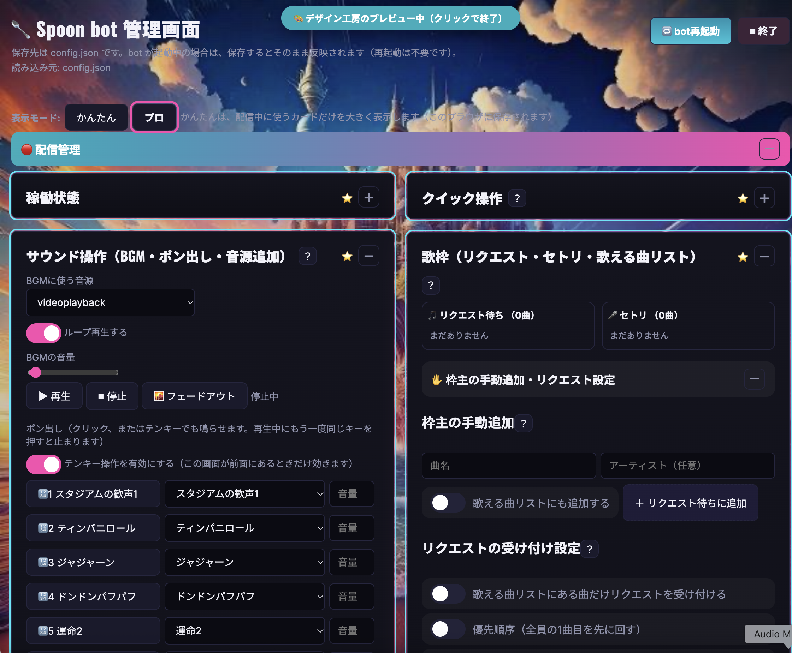

Spoon bot 導入マニュアル
Spoon の公式機能「Spoon Developers」を使って、自分の配信に bot（自動で反応してくれる助手）を導入するまでの手順書です。
プログラミングの知識は不要です。手順どおりにコピー＆ペーストできれば進められます。
Spoon Developers のスタートページです。このページは Spoon アプリの中からは見つかりにくい 場所にあります。申請もドキュメントもここが入り口なので、作業を始める前にブラウザへブックマークしておくのがおすすめです。
このマニュアルの構成
- 共通編 第1章 はじめに：bot ができることと全体像
- 共通編 第2章 bot専用アカウントを用意する
- 共通編 第3章 Spoon Developers でアプリ登録と権限申請
- 共通編 第4章 アプリ側の設定：リダイレクトURL
- 共通編 第5章 審査承認後：Client ID と Client Secret
- Mac編 第6章 Mac の準備：Node.js を入れる
- Mac編 第7章 bot の設置：フォルダ配置と展開のしかた
- Mac編 第8章 .env の設定（秘密情報の入れ方）
- Mac編 第9章 config.json の作成
- Mac編 第10章 初回ログインとトークン取得（認証）
- Mac編 第11章 モックで動作確認
- Mac編 第12章 テスト配信（DRY_RUN）から本番へ
- Mac編 第13章 毎回の配信手順
- Mac編 第14章 管理画面の使い方
- Mac編 第15章 公開ページと短縮リンク
- Mac編 第16章 更新の受け方（新しい zip が届いたら）
- 第17章 Windows編（準備中）
- 第18章 クラウド編／スマホ用（準備中）
- 第19章 つまずきポイント集（準備中）
第1章 はじめに：bot ができることと全体像
このマニュアルは、Spoon の公式機能「Spoon Developers」を使って、自分の配信に bot（自動で反応してくれる助手）を導入するまでの手順をまとめたものです。
仕組みはシンプルです。
- 配信はいつもどおり配信端末（タブレット／スマホ）の Spoon アプリで開きます。
- bot は PC（またはサーバー）の上で動くプログラムです。配信中のコメント・入室・ハート・spoon・フォローを公式 API 経由で受け取り、決められた反応を返します。
- bot ができることの例：
- キーワードへの自動返信（例：「!help」と打たれたら使い方を返す）
- リスナーごとの集計（コメント数・ハート・spoon を数えて公開する）
- spoon の数やフォローに合わせた効果音（SE）の再生
- 曲リスト・ビンゴ・バトルなどの公開ページの自動更新
- 音（SE）は bot が動いている PC から出ます。PC（Mac）の音をオーディオインターフェース（ミキサー）経由で配信に乗せる構成が前提です。
進め方は大きく2段構えです。
・配信端末：iPad
・オーディオインターフェース：Yamaha AG03 Mk2
・PC：iMac（Intel Mac、macOS Sequoia）
第2章 bot専用アカウントを用意する
最初に決めることが1つあります。bot になる Spoon アカウントです。
- アプリ登録したアカウントが、そのまま bot アカウントになります。bot のチャットや入室の告知は、そのアカウントの名前で出ます。
- 自分の DJ アカウントで登録してはいけません。自分の配信に bot として接続できなくなります。
- 用意のしかたは2通り：
- 新しく Spoon アカウントを作る
- すでに持っているサブアカウントを使う（実際にこの方法で運用しています）
- サブアカウントを使う場合の注意：
- bot が接続している配信に、同じアカウントでアプリや Web から入らないでください。そのセッションが切れると bot も退室してしまいます。
- bot の名前はリスナーにそのまま見えます。「誰の bot か」が分かる名前になります。静かに枠周りをしたい用途と兼ねるなら、新規アカウントの方が向いています。
- アカウントのパスワードは安全な場所に保管し、チャットや SNS に書かないでください。
あわせて、アプリ名（Developer Center に登録する名前）も考えておくと次章がスムーズです。例：「○○雑談bot」のような、自分の配信の名前が分かるもの。
第3章 Spoon Developers でアプリ登録と権限申請
- ブラウザで Spoon Developers のスタートページ（https://developers.spooncast.net/jp） を開きます。ここがすべての入り口です。「アプリケーションを登録」から登録へ、「ドキュメントを見る」から API ドキュメントへ進めます。
- bot 用アカウントでログインします（DJ 本人のアカウントでログインしないこと）。
- 新規アプリの作成を選びます。
- アプリ名と説明文を入力します。説明文のたたき台（自分の言葉に直して OK）：
📝 説明文のたたき台自分のSpoon雑談配信を補助する個人用botです。配信中のチャット・入室・ハート・spoon・フォローのイベントを受け取り、キーワードへの自動返信、リスナーごとの集計の公開、spoon数に応じたSE再生を行います。自分の配信でのみ使用します。
- リダイレクトURL は、まず
http://localhostと入れておきます（あとで第4章のとおり直します）。 - 権限は、画面にある 12個すべて にチェックします。


12権限と、それぞれ何に使うかは次のとおりです。
| 権限 | 何に使うか |
|---|---|
| me.read | bot アカウント自身の情報を取得する |
| live.read | 配信の情報を取得する |
| listeners.read | リスナー一覧を取得する（サブスクのプラン照合など） |
| fans.read | ファンの情報を取得する |
| donations.read | 投げられた spoon の記録を取得する |
| events.chat | コメントのイベントを受け取る |
| events.presence | 入室・退室のイベントを受け取る |
| events.like | ハートのイベントを受け取る |
| events.donation | spoon のイベントを受け取る |
| events.follow | フォローのイベントを受け取る |
| chat.send | チャットに返信を送る |
| dj.follow | bot が DJ をフォローするために使う |
- 申請を送信します。あとは審査の結果待ちです。
- 審査期間の目安は公式には公表されていません。実例では、申請した翌日に承認されました（必ずこの日数で通るという保証ではありません）。
- 差し戻された場合は理由が表示されるので、直して再審査に出せます。
- 承認されたら、第5章に進みます。
なお、bot が配信に接続すると bot 名でのリスナー告知が自動で出ます（これは OFF にできません）。また、イベントの接続は1配信につき1本だけです。
第4章 アプリ側の設定：リダイレクトURL
認証（初回ログイン）でつまずかないために、この章は飛ばさないでください。実際にここで失敗した経験をもとに書いています。
リダイレクトURL の正解は次の形です。
http://localhost:3000ポート番号（:3000）まで含める／後ろにパス（/callback など）を付けないhttp://localhost/http://localhost:3000/callbackポートなし・パス付きは、認証エラーや保存エラーになります実際に起きた失敗：
- 登録側が
http://localhost/（ポート・パスなし）、bot 側がhttp://localhost:3000/callbackになっていて、認証の同意画面で「このアプリとは連携できません」と表示され、先に進めませんでした。 http://localhost:3000/callbackのようにパス付きで保存しようとすると、「The redirect URI format is invalid.」と出て保存自体ができません。- 両方を
http://localhost:3000にそろえたら、その場で認証が通りました（再審査にはなりませんでした）。
http://localhost:3000 に直しておいてください。あとで bot 側の設定ファイル（.env）にも同じ値を入れます。両方が完全一致していないと認証できません。
第5章 審査承認後：Client ID と Client Secret
承認されると、Developer Center のアプリ詳細に Client ID と Client Secret が表示されます。

この2つは bot が API を使うための「鍵」です。扱いのルール：
・入力するのは、自分の PC の中の設定ファイルだけです（環境別編で案内します）。
・Client ID も、むやみに公開しない方が安全です。
ここまでが共通編です。次は環境別編に進みます。このマニュアルでは Mac編を続けます。
第6章 Mac の準備：Node.js を入れる
対象：Mac。この編の手順は、Mac（macOS Sequoia）で実際に導入して確認したものです。
ターミナル（Terminal）というアプリを使います。Spotlight（⌘+スペース）で「ターミナル」と検索すると出てきます。コマンドは1行ずつコピーして貼り、Enter で実行します。
bot は Node.js という実行環境の上で動きます。まず入っているか確認します。
- ターミナルを開いて、次を入力します。
node -v v26.13.0のようにバージョンが表示されれば、もう入っています。第7章へ進んでください。command not foundと出たら、まだ入っていません。次の方法で入れます。- ブラウザで nodejs.org を開き、インストーラー（.pkg ファイル）をダウンロードします。
- ダウンロードした .pkg をダブルクリックして、画面の案内どおりにインストールします。
- インストールが終わったら、もう一度ターミナルで
node -vを実行し、バージョンが表示されることを確認します。
補足：パッケージ管理ツール（Homebrew）経由の導入は、このマニュアルでは案内しません。現行の Homebrew インストーラは Intel Mac では使えなかったためです。公式サイトの .pkg が、実際に通った確実な方法です。
第7章 bot の設置：フォルダ配置と展開のしかた
bot 一式は zip ファイルで受け取ります。展開と配置は ターミナルで行います。
- 置き場所は
~/Downloads/bot（ダウンロードフォルダの中の bot フォルダ）に統一します。以後の作業はすべてこのフォルダで行います。 - bot フォルダごと丸ごと置き換えるのは厳禁です。設定ファイル（.env）と認証ファイル（tokens.json）は zip に含まれていないので、フォルダごと消すと認証からやり直しになります。置き換えるのは中身のファイル・フォルダ単位です。
📁 bot フォルダの構成（イメージ）
~/Downloads/bot/
├─ .env ← 秘密情報の設定（zip には入っていない）
├─ tokens.json ← 認証の鍵（zip には入っていない）
├─ config.json ← 自分用の設定（見本から作る）
├─ config.example.json
├─ src/ ← bot のプログラム本体
├─ se/ ← 効果音（SE）の置き場所
└─ data/ ← bot の記録データ初回設置の例（zip がダウンロードフォルダにある場合）：
rm -rf /tmp/spoon-bot && unzip -o ~/Downloads/spoon-bot.zip -d /tmp/spoon-bot && cp -R /tmp/spoon-bot/bot/ ~/Downloads/bot/（zip のファイル名は、受け取ったものの名前に読み替えてください。）
第8章 .env の設定（秘密情報の入れ方）
.env は、鍵などの秘密情報を入れる設定ファイルです。bot フォルダの中で作ります。
- bot フォルダに移動します。
cd ~/Downloads/bot - 見本をコピーして
.envを作ります。cp .env.example .env - テキストエディットで開きます。
open -e ~/Downloads/bot/.env - 次の項目を書き換えます（**** の部分に、Developer Center に表示された自分の値を入れます）。
SPOON_CLIENT_ID=**** SPOON_CLIENT_SECRET=**** SPOON_REDIRECT_URI=http://localhost:3000 DRY_RUN=1SPOON_REDIRECT_URIは第4章の値と完全一致させます。DRY_RUN=1は安全スイッチです。1 の間は bot は実際にチャットを送らず、画面に表示するだけになります。最初は必ず 1 のままにしてください。本番で送り始めるときだけ 0 に変えます。- ファイルを保存して閉じます。
- 設定できたかは、中身を表示せずに確かめられます。次のコマンドは、値が入っている行の「件数」だけを表示します。
両方ともgrep -c "SPOON_CLIENT_ID=" ~/Downloads/bot/.env grep -c "SPOON_CLIENT_SECRET=" ~/Downloads/bot/.env1と出れば、項目自体は書けています（値の中身は画面に出ません）。
第9章 config.json の作成
文面や機能の ON/OFF は config.json という設定ファイルで管理します。
- 見本から自分用を作ります。
cp ~/Downloads/bot/config.example.json ~/Downloads/bot/config.json - ルール：
config.example.jsonを直接編集しない。更新のたびに上書きされて、編集が消えてしまいます。- 編集は
config.jsonに対して行います（第14章の管理画面からも編集できます）。 - 設定を変えたら bot の再起動で反映されます。再起動の前に第11章のモックで確認すると安全です。
第10章 初回ログインとトークン取得（認証）
bot が本物の Spoon API につながるための、最初の認証です。
- ターミナルで bot フォルダにいることを確認し、次を実行します。
cd ~/Downloads/bot npm run auth - ブラウザで Spoon の同意画面が開きます。
- ここが大事な分かれ道です。同意は DJ 本人のアカウント で行います。
- 画面に表示されているアカウント名を確認してください。bot 用アカウントの名前になっていたら、いったんログアウトして DJ 本人のアカウントでログインし直します。
- bot 用アカウントのまま同意すると「このアプリとは連携できません」と表示されて進めません（実際にこの切り分けで解決しました）。
- 同意すると、bot フォルダに
tokens.jsonというファイルができます。これで認証は完了です。 - うまくいかないときは、まず第4章のリダイレクトURL（アプリ側と .env が両方とも
http://localhost:3000で一致しているか）を確認してください。失敗のほとんどはここです。
tokens.json は認証の鍵そのものです。.env と同じく、公開・共有はしないでください。
第11章 モックで動作確認
本物の配信につなぐ前に、練習実行で bot の動きを確かめます。
cd ~/Downloads/bot
npm run mock- モックは、偽のコメントや spoon などのイベントを bot に渡して、返信が正しく作られるかを表示する仕組みです。本物の配信にはつながりません。
- 画面に bot の返信の件数と内容が出ます。出てきた返信が想定どおりなら、設定とプログラムはひとまず正常です。
- モックは設定ミスの発見にも使えます。たとえば config.json が古いままだと、新しい機能の返信がモックにも出てきません。「更新したのに新機能が動かない」ときは、まずモックで切り分けてください。
第12章 テスト配信（DRY_RUN）から本番へ
いよいよ実配信で試します。最初は安全スイッチを入れたまま、ファン限定のテスト配信で行います。
テスト配信（DRY_RUN=1）
前提：.env の DRY_RUN が 1 のままであること。
- 配信端末（タブレット／スマホ）でファン限定のテスト配信を開始します。
- Mac のターミナルで bot を起動します。
cd ~/Downloads/bot npm start - bot の接続が完了するまで少し待ちます。リスナー一覧に bot アカウントが出てきたら準備 OK です。
- DJ 側のリスナー一覧から、bot を マネージャーに任命 します。
- DJ がチャットで
!helpと打ちます。 - DRY_RUN 中は実際のチャットには何も出ません。代わりに、bot が「送るはずだった返信」がターミナルに表示されます。これが見えれば接続成功です。
・
npm start は1つだけ起動してください。
本番モード（DRY_RUN=0）へ
- ターミナルで Ctrl+C を押して bot を止めます。
- .env を開き、
DRY_RUN=1をDRY_RUN=0に書き換えて保存します。open -e ~/Downloads/bot/.env - もう一度
npm startで起動します。 - テスト配信のまま
!helpと打つと、今度は 実際のチャット欄に bot の返信が表示されます。ここまで確認できたら導入完了です。 - 後片付けとして、テストが終わったら配信を終了し、bot も Ctrl+C で止めます。
第13章 毎回の配信手順
通常の配信では、この3ステップだけです。
cd ~/Downloads/bot してから npm start。配信が終わったら、ターミナルで Ctrl+C を押して bot を止めます。
・
npm start の二重起動は厳禁です。2つ起動すると互いに切断し合います。「反応しないな」と思ったら、まず起動し直す前に、今動いている bot を Ctrl+C で止めてから起動し直してください。・マネージャー任命は配信ごとに必要な手順です。忘れると bot が正しく反応できません。
第14章 管理画面の使い方
文面や機能の設定は、ブラウザの管理画面から変更できます。
- bot が起動している状態（
npm startのターミナルが動いている状態）で、ブラウザで次を開きます。http://localhost:3939

- 画面でできることの例：
- 機能ごとの ON/OFF の切り替え
- 反応文・お礼文などの文面の編集
- SE（効果音）の割り当てと音量の調整
- 特別な人（入室時に特別な挨拶をする相手）の登録
- 編集したら画面の保存ボタンを押します。設定の反映には bot の再起動が必要な場合があります。
- 音量は 0〜1 の範囲で指定します。1 が最大です。1.5 のような 1 を超える値は使えません。「もっと大きくしたい」ときは、音源ファイル自体の音量を上げるか、ミキサー側のゲインで調整します。
管理画面だけを単体で開きたい場合は、ターミナルで npm run admin でも起動できます（アドレスは同じ http://localhost:3939 です）。
第15章 公開ページ（曲リスト・ビンゴ・ポータルなど）と短縮リンク
bot には、リスナー向けの公開ページ（曲リスト、ビンゴ、バトル、イメージキャラ名鑑などをまとめたポータル）があります。
- 公開ページは、bot が GitHub Pages へ自動で公開する仕組みです（.env に GitHub の設定を入れている場合）。bot が止まっている間も、公開済みのページはそのまま見られます。
- 公開されたページの URL は長いので、短縮リンク（is.gd などのサービス）を作っておくと便利です。
- 運用のしかた：短縮リンクを配信の固定コメントに貼っておき、リスナーにそこから各ページへ行ってもらいます。
- 細かい公開設定は管理画面の案内に従ってください。この章では要点のみとします。
第16章 更新の受け方（新しい zip が届いたら）
bot は改良版の zip で更新されていきます。受け取り方はいつも同じ手順です。
- 動いている bot を、ターミナルで Ctrl+C を押して止めます。
- ターミナルで新しい zip を展開し、上書きコピーします（第7章と同じ方式です。Finder は使いません）。
（rm -rf /tmp/gameXX && unzip -o ~/Downloads/spoon-bot-gameXX.zip -d /tmp/gameXX && cp -R /tmp/gameXX/bot/ ~/Downloads/bot/gameXXの部分は、届いた zip の名前に読み替えてください。） - .env と tokens.json は zip に含まれていないので、この手順では消えません。フォルダごと置き換えさえしなければ大丈夫です。
- config.json の作り直しは、案内があったときだけ行います。
⚠️ 作り直しの注意
cp config.example.json config.jsonで作り直すと、特別な人などの 手入力した登録が消えてしまいます。作り直す前に、登録内容の控えを取るか、管理画面のバックアップ機能（設定の書き出し）を使ってください。 - 最後にモックで確認します。
cd ~/Downloads/bot npm run mock - モックが問題なければ、テスト配信（または次の通常配信）で実物の反応を確かめて完了です。
第17章 Windows編準備中
Windows での導入手順（Node.js の入れ方、PowerShell を使う手順など）は現在準備中です。bot 本体は Windows 対応済みですが、実機での導入確認が取れ次第、この章を追加します。
第18章 クラウド編／スマホ用準備中
PC がない人向けに、クラウドサーバー（VPS）へ bot を置く手順は現在準備中です。なおこの構成では、チャット返信・集計・公開ページは動きますが、SE の音は配信に乗らない機能限定版になります（サーバー上の bot には音を出す先がないため）。あわせてサーバー代（月額の固定費）もかかります。
第19章 つまずきポイント集準備中
実際に起きた失敗と対処法の一覧は現在準備中です。当面は各章の「注意」コールアウトを参照してください（認証の失敗は第4章、更新時の注意は第16章）。
← リスナーページ（ポータル）へ戻る